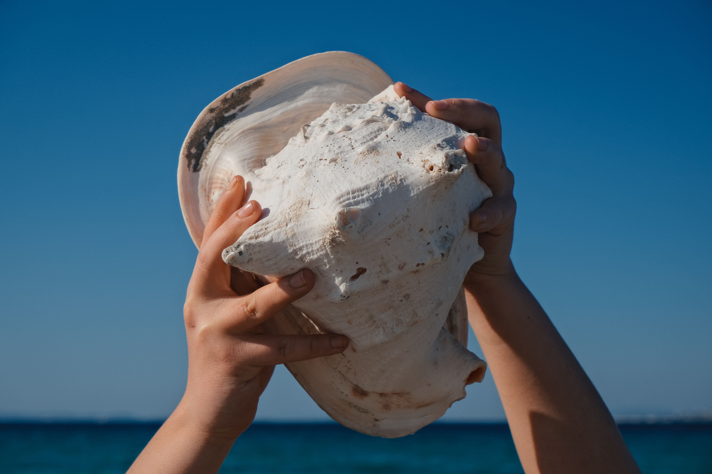

Mingzhu possesses an extraordinary sensory skill paired with a subtle transformative quality. While diving, she can intuitively sense whether a tightly shut oyster shell conceals a flawed pebble or a brilliant, healthy pearl without ever disturbing the sea creature inside.
Whenever this keen instinct awakens, her fingertips and the glint in her eyes shimmer with a gentle, mother-of-pearl iridescence, illuminating the shadows of the seafloor.